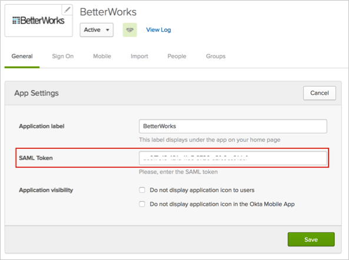

Contact your Customer Success Manager at BetterWorks and request that they enable SAML SSO for your account.
Save the following as an .xml file, and provide it to your BetterWorks Customer Success Manager.
Sign in to Okta Admin app to have this variable generated for you.
After processing your request, your BetterWorks Customer Success Manager will provide you with a saml_token.
In Okta, select the General tab for the BetterWorks app, enter the saml_token in the SAML Token field, then click Save, as shown below:

Done!
Notes:
IdP-initiated flows and SP-initiated flows are supported.
Just In Time (JIT) provisioning is not supported.